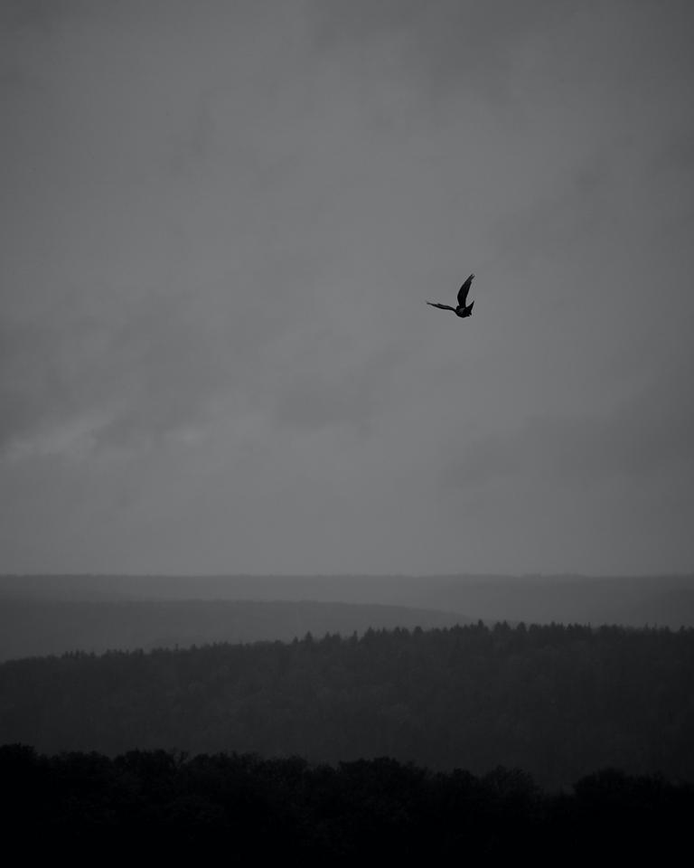
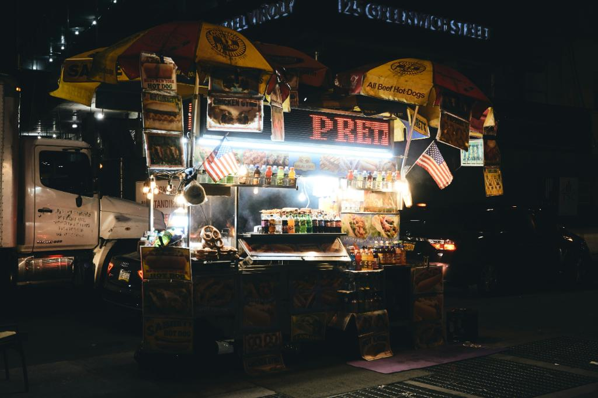
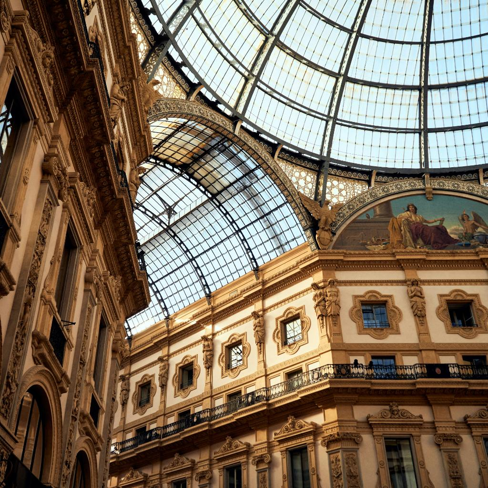
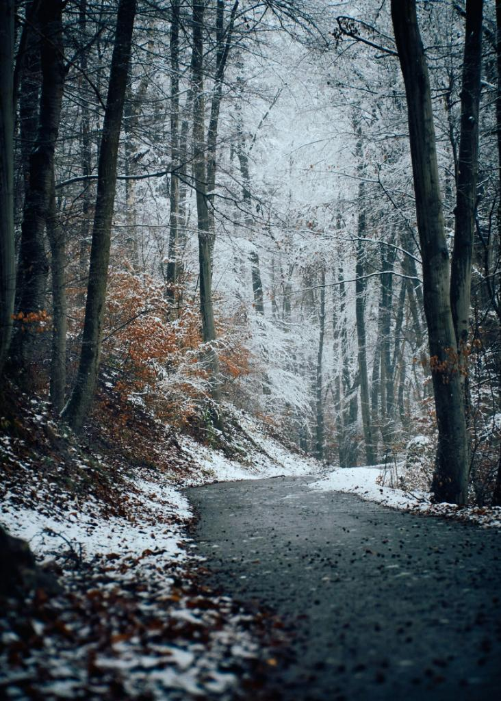
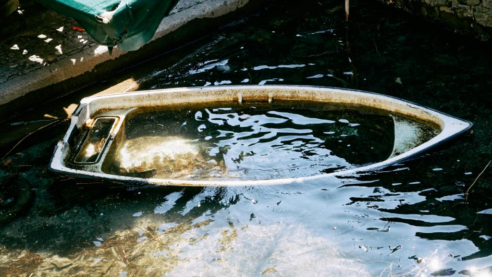

Reference:
Abstract
Distribution matching is central to many vision and graphics tasks, where the widely used Wasserstein distance is too costly to compute for high dimensional distributions. The Sliced Wasserstein Distance (SWD) offers a scalable alternative, yet its Monte Carlo estimator suffers from high variance, resulting in noisy gradients and slow convergence. We introduce Reservoir SWD (ReSWD), which integrates Weighted Reservoir Sampling into SWD to adaptively retain informative projection directions in optimization steps, resulting in stable gradients while remaining unbiased. Experiments on synthetic benchmarks and real-world tasks such as color correction and diffusion guidance show that ReSWD consistently outperforms standard SWD and other variance reduction baselines.
Video
Complex Matching Results
Visualization of the distribution matching for several complex distributions.
Diffusion Guidance Results
Visualization of the diffusion color guidance process. Notice how the visual style of the generation changes drastically with each different reference image.
Prompt: A raccoon reading a book by candlelight.

Prompt: A boy and his dog exploring a crystal cave
Reference:

Prompt: Watercolor, Hand Painted, Fantasy City
Reference:

Prompt: A kitten exploring an antique library
Reference:

Color Matching
We can also use it to align the color of a source image to a reference image.

Source Image
Loading...

Reference Image
BibTeX
@article{boss2025reswd,
title={ReSWD: ReSTIR'd, not shaken. Combining Reservoir Sampling and Sliced Wasserstein Distance for Variance Reduction.},
author={Boss, Mark and Engelhardt, Andreas and Donné, Simon and Jampani, Varun},
journal={arXiv preprint},
year={2025}
}